Гидроизоляция кровли
Ремонт и гидроизоляция кровли может проводиться:
- Универсальной кровельной мастикой Акваблокер.
- Многоцелевыми герметиками и клеями для гидроизоляции и герметизации кровли.
- Самоклеющимися лентами для герметизации стыков кровли.
- Битумными кровельными герметиками.
1. Гидроизоляция кровли универсальной кровельной мастикой Акваблокер
Новая, однокомпонентная универсальная гидроизоляция - кровельная мастика Акваблокер на основе МS-полимера от HEY’DI одинаково хорошо подходит для гидроизоляции кровли, герметизации фальцев кровли, для стен, крыш и фундаментов. Как выглядит гидроизоляция кровли Акваблокером показано на фото 1.
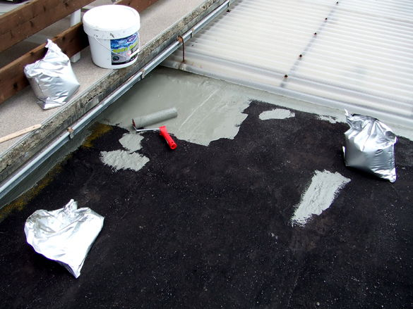
Часть кровли, покрытая слоем Акваблокера
1. Часть кровли, покрытая слоем Акваблокера
Выпускается Акваблокер в готовом к употреблению виде в пластиковых пакетах по 7 кг, банках по 1 кг и в картриджах по 0,29 л для мелкого ремонта. Применяется очень просто. Перед работой пакет или банку открывают, макают туда кисть или валик с коротким ворсом и ровным слоем наносят Акваблокер на подготовленное основание (фото 2, 3, 4).
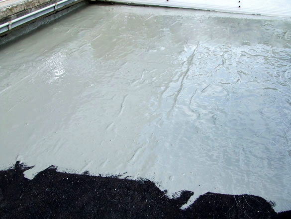
Кровля, пакеты и ведро с Акваблокером
2. Ведро, пластиковые пакеты с Акваблокером, валик
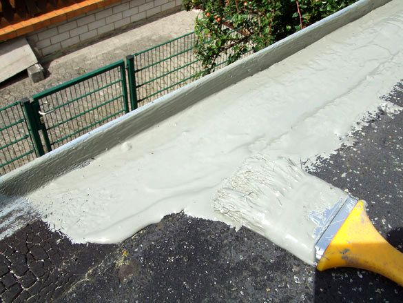
Акваблокер легко наносится кистью
3. Акваблокер легко наносится кистью
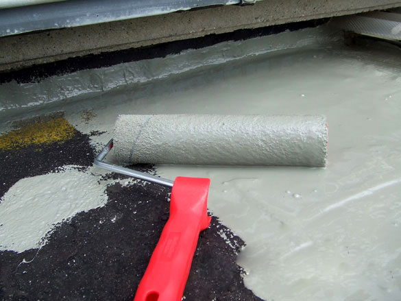
Акваблокер легко наносится валиком
4. Акваблокер легко наносится валиком с коротким ворсом
Обычно для гидроизоляции кровли достаточно нанести два слоя с общей толщиной 1,5 мм. Отверждается Акваблокер от влаги воздуха до состояния прочной эластичной резины, становится стойким к атмосферным воздействиям, сохраняет все свойства в интервале температур от –40оС до +80оС. Эта кровельная мастика надежно прилипает практически на любые строительные материалы без применения грунтовки, не имеет усадки, перекрывает трещины до 10 мм. Гидроизоляция кровли, выполненная Акваблокером, легко ремонтируется, может быть окрашена, обсыпана песком или цветными чипсами. Сегодня Акваблокер является универсальной мастикой для кровли и кровельным герметиком, особенно эффективным при ремонте и герметизации фальцев кровли. За это его очень ценят все кровельщики.
В настоящее время Акваблокер получил широкое распространение как универсальный кровельный герметик и мастика для кровли. С его помощью выполнена гидроизоляция кровли жилого дома «Монблан», здания кинотеатра «Баррикада», герметизация стыков кровли, балконов и террас жилого дома «Омега Хаус» и жилых домов на Крестовском острове в г. Санкт–Петербург и т.д.
Посмотреть видео - "АКВАБЛОКЕР"
2. Гидроизоляция кровли многоцелевыми герметиками и клеями
Для устройства, ремонта и гидроизоляции кровли сегодня применяют различные кровельные герметики и клеи на основе полиуретана, например, герметик Бостик 2637 и клей Симсонтоп, а также, герметики и клеи-герметики, изготовленные на основе MS-полимера: Бостик 2720 MS, Бостик 2750 MS, Суперфикс и прозрачный Супер-Транс. По своим свойствам MS-полимеры значительно превосходят полиуретаны. Прежде всего, они не содержат изоцианатов и растворителей, не имеют усадки и не образуют пузырей при нанесении. Они инертны, не окисляют и не разрушают материалы, имеют хорошую адгезию практически ко всем основаниям, не требуют применения грунтовок и т.д.
Эти герметики очень хорошо подходят для герметизации стыков кровли, заделки свищей, приклеивания мягких и металлических заплаток, герметизации и заделки швов и мест соединения крепежа, стыков водосточной трубы и кровли, герметизации фальцевой кровли, примыканий кровли к трубам и стенам, для гидроизоляции и герметизации стеклянных, металлических и старых битумных кровель, для герметизации кровли из глиняной черепицы, кирпичной кладки, водосточных труб, дерева, пластика, бетона и т.д. Битумный кровельный герметик и клей Эласторуф, на основе битума и синтетических волокон, часто применяют при изготовлении, ремонте и гидроизоляции мягкой кровли для прочного склеивания отдельных элементов покрытия, приклеивания заплаток, замазывания и герметизации протечек. Он хорошо прилипает даже на влажную поверхность и обладает превосходной устойчивостью к старению.
2720 MS
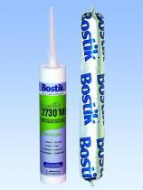
Бостик 2720 MS - универсальный однокомпонентный мягкоэластичный герметик на основе MS-полимера. Выпускается в картриджах 290 мл и в мягких упаковках "колбасках" по 600 мл. В настоящее время повсеместно применяется для ремонта и гидроизоляции кровли. Особенно удобен для быстрой и качественной герметизации фальцев кровли. Обладает хорошей адгезией к широкому спектру материалов, в том числе и к оцинкованной стали, и хорошей устойчивостью к УФ излучению, не образует пузырей при нанесении, ремонтопригоден (в отличие от силикона).
2750 MS
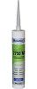
Бостик 2750 MS - универсальный однокомпонентный эластичный клей и герметик на основе MS-полимера выпускается в картриджах 290 мл. Применяется для эластичного приклеивания различных строительных материалов при проведении внутренних и наружных работ. Широкий спектр склеиваемых материалов позволяет использовать этот клей-герметик в качестве кровельного герметика, а также совмещать герметизацию с очень прочным эластичным склеиванием при ремонте и гидроизоляции кровли из различных материалов. Обладает хорошей устойчивостью к УФ-излучению и атмосферному и химическому воздействию, устойчив к воздействию воды, ремонтопригоден.Суперфикс MS
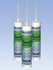
Суперфикс MS - универсальный многоцелевой однокомпонентный клей и герметик на основе MS-полимера выпускается в картриджах 290 мл. Отличается от Бостик 2750 MS, в основном, термостойкостью до 100оС и чуть большей химической стойкостью. Может применяться как очень прочный эластичный клей и кровельный герметик для герметизации кровли, герметизации стыков кровли и герметизации швов кровли.СУПЕРТРАНС
СУПЕРТРАНС - универсальный, многоцелевой однокомпонентный прозрачный клей и герметик на основе MS-полимера, выпускается в картриджах 290 мл. Не пригоден для склеивания/герметизации природного и искусственного камня. Может применяться как очень прочный прозрачный эластичный клей и кровельный герметик для герметизации кровли, герметизации стыков кровли и герметизации швов кровли, а также для эластичного склеивания различных материалов и элементов кровли внутри и снаружи помещений и заделки швов с небольшой подвижностью.
Бостик 2637 (Bostik 2637)
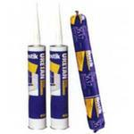
Бостик 2637 - полиуретановый однокомпонентный мягкоэластичный герметик, выпускается в картриджах 300 мл и мягкой упаковке "колбаска" 600 мл. Применяется как кровельный герметик. Обладает превосходной погодоустойчивостью и устойчивостью против воздействия химикатов. УФ излучение может отрицательно сказаться на цвете герметика. Если необходимо исключить образование пузырей, из-за выделения газов из герметика, а также повысить устойчивость к УФ излучению, то рекомендуется применять герметик Бостик 2720 MS.Бостик 2639 (Bostik 2639)
Бостик 2639 - полиуретановый, однокомпонентный, быстроотвердевающий, эластичный герметик, выпускается в картриджах 300 мл и мягкой упаковке "колбаска" 600 мл. Устойчив к атмосферным воздействиям, к химическим веществам, на него можно наносить лакокрасочные материалы. Применяется для герметизации кровли, водосточных желобов, боковых стенок, декоративных планок, герметизации стыков кровли, перекрытий внахлест, спойлеров, воздуховодных патрубков и т.п. Имеет ограничения по нанесению на ряд материалов.
Симсонтоп (Bostik Simsontop)
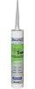
Симсонтоп - готовый к применению однокомпонентный полиуретановый клей. Предназначен для приклеивания теплоизоляционных материалов на плоских крышах, особенно для приклеивания рулонных пленочных материалов на жестяные профилированные листы, на битуминозные поверхности, минерализованные или с песчаной обсыпкой, в сочетании со следующими утеплителями: экструдированный пенополистирол, жесткая полиуретановая пена, пенопласт из полиизоционата, жесткий пенопласт из фенольной смолы, утеплители из минерального волокна. Быстро схватывается, просто и быстро наносится, обеспечивает эффективное и экономичное приклеивание изоляционных материалов.Общие рекомендации по склеиванию и герметизации
Склеивание и герметизацию следует проводить в интервале температур не ниже +5°С и до +30°С. Основание на которое будет наносится клей-герметик должно быть прочным, чистым, не содержать ни битумов, ни гудрона ни масло содержащих материалов. Для MS-полимеров основание может быть влажным. Поверхности швов (поверхности сцепления), которые подлежат заполнению, должны быть прочными, сухими, чистыми, очищенными от масел и пыли. При склеивании клей-герметик наносится на поверхность приклеиваемого материала точечно или полосами. При герметизации, герметик равномерно выдавливают в шов так, чтобы при этом не создавались воздушные пузыри. Поверхность шва следует подровнять при помощи слегка увлажненного мастерка, расшивки и т.п. Для выдавливания применяют специальные ручные пистолеты под полиэтиленовый картридж на 300 мл или под мягкую упаковку «колбаска» на 600 мл.
3. Гидроизоляция кровли самоклеющимися лентами
Самоклеющиеся герметизирующие и гидроизоляционные ленты, применяемые для герметизации и гидроизоляции кровли, имеют тонкий ровный слой очень липкого материала, в качестве которого чаще всего используют бутил-каучуковые и битум-каучуковые композиции. Для предотвращения слипания, растяжения, удобства хранения и использования рабочие (клейкие) поверхности лент покрывают бумагой с антиадгезионным покрытием или соответствующей пленкой. Перед началом работ бумага или пленка легко снимается, липкая поверхность освобождается, и лента липкой стороной может быть наклеена на оклеиваемую поверхность.
Наклеенную ленту рекомендуется прокатать валиком для устранения воздушных пузырей. У двухсторонних самоклеющихся лент рабочими являются обе стороны. У односторонних лент для приклеивания используется только одна сторона, другую, внешнюю, при изготовлении ленты обычно покрывают каким-либо защитным материалом, например, алюминиевой фольгой, неткаными материалами и т.д. Покрытие защищает ленту от УФ излучении и других вредных внешних факторов, а также позволяет окрашивать приклеенную ленту.
Самоклеющиеся герметизирующие и гидроизоляционные ленты Батубанд и Бостик 1182 обладают высокой адгезией к различным материалам и просты в использовании. С их помощью обеспечивается надежная гидроизоляция кровли, а также герметизация стыков и швов на длительный срок.
Батубанд (Batuband)
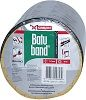
Батубанд - битум-каучуковая самоклеящаяся гидроизоляционная лента выпускается в рулонах длинной 10 м, толщиной 1,5 мм, шириной (5; 7.5; 10; 15; 22.5; 30) см. Лицевая сторона ленты снабжается алюминиевым покрытием разного цвета. Лента отличается очень сильным начальным сцеплением с основанием, что делает коррекцию положения приклеенной ленты практически невозможной. Применяется для гидроизоляции кровли, герметизации швов кровли, мансардных окон, чердачных мансард, световых куполов и световых дорожек и др. В силу своей эластичности и способности длительное время сохранять форму лента очень хорошо подходит для герметизации стыков кровли при покрытии сложных деталей и соединений. Лента устойчива к дождю, УФ облучению и воздействию внешних температур.Bostik-Grip 1182
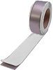
Бостик 1182 - бутиловая, долговечно пластичная, самоклеющаяся уплотнительная лента с алюминиевым кашированием, на основе синтетического каучука. Выпускается в рулонах длиной 20 м, толщиной 0,8 мм и различной ширины до 200 мм. Применяется лента для внутренних и наружных работ при гидроизоляции кровли, герметизации стыков кровли, стыков между металлом и стеклом, стыков между стенами, проемов крыш, световых куполов и т.п.). Лента безусадочная, устойчива к старению и воздействию погоды. Не содержит битумов, растворителей и галогенных соединений, устойчива к УФ-излучению. В нормальных климатических условиях сохраняет свои свойства, не дает огнеопасных паров, без запаха.3. Гидроизоляция, герметизация кровли битумными кровельными герметиками
Эласторуф (Elastoroof)
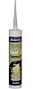
Эласторуф - битумный кровельный герметик и клей эластично-пластичный, модифицированный каучуком. Выпускается в картриджах по 310 мл. Применяется как замазка и клей при гидроизоляции крыш, для герметизации алюминиевых фасонных крыш и кромок крыш, герметизации на битумной крыше фольги и амальгам, крепления свинцовых полосок, герметизации стыков кровли, приклеивания битумной дранки и т.д. Превосходно прилипает на поверхности, такие как каменная кладка, бетон, металл, стекло, дерево и битумные материалы. Содержит не токсичный растворитель, обладает превосходной устойчивостью к старению и свойством прилипания, хорошо прилипает даже на влажную поверхность.